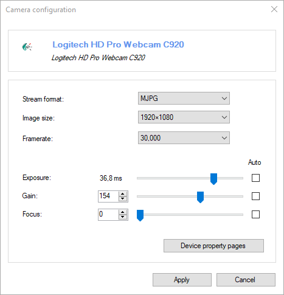

Webcams, Mini DV, and HDMI capture cards¶
General¶
MotionON supports devices with a DirectShow driver. These devices include USB video class (UVC) webcams, Mini DV camcorders, and analog video converters.
Configuration¶
The exact list of available options depends on the camera.
Stream format¶
The avalaible stream formats depend on the brand and model of the camera.
The typical stream formats include:
RGB, RGB24, RGB32: the images are not compressed.
YUV, YCbCr, YUY2, I420: the images are not compressed.
MJPEG: the images are compressed on the camera.
Using the MJPEG stream format can lower the bandwidth requirements and improve framerate.
Note
MotionON native storage format for compressed videos is MJPEG. When using this stream format, the videos are saved as-is without any extra decompression or compression steps.
Image size¶
This defines the image size of the stream and impacts the available options in the framerate dropdown.
Framerate¶
This is the list of framerates available for the selected image size.
Exposure¶
This value is related to the amount of time the sensor is exposed.
Changing the exposure duration lets you find a tradeoff between motion blur and light requirements. Lowering the exposure duration reduces motion blur and increases the amount of light required to capture the scene.
For most cameras brands, the unit of this value is not known and it is exposed as an arbitrary number. For some camera brands the value is shown in milliseconds if a special property is exposed by the driver or the values where derived manually.
This value is a limiting factor for the framerate. If this value is too high the framerate is lowered automatically by the camera.
Gain¶
This is the amount of amplification of the signal captured on the sensor. Increasing this value increases the apparent brightness but can introduce noise in the image.
This value has no impact on the framerate.
Focus¶
This drives motorized lenses to adjust focus.
Other options¶
Options that are not supported in MotionON can be modified using the Device property pages button.